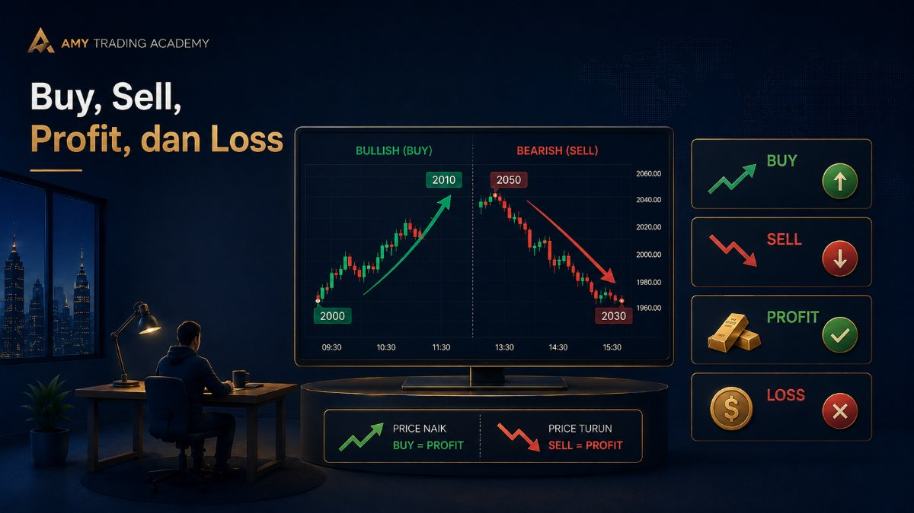
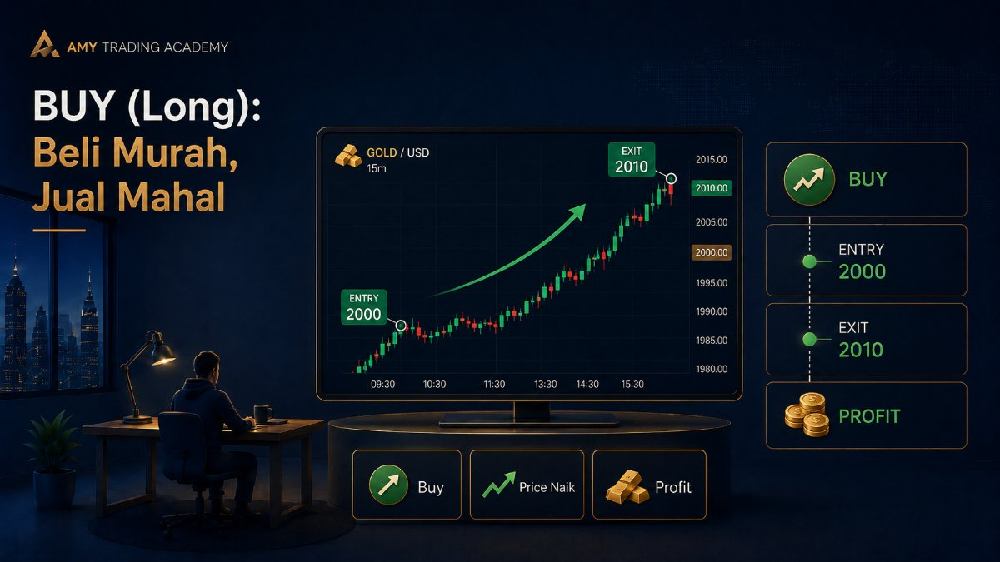
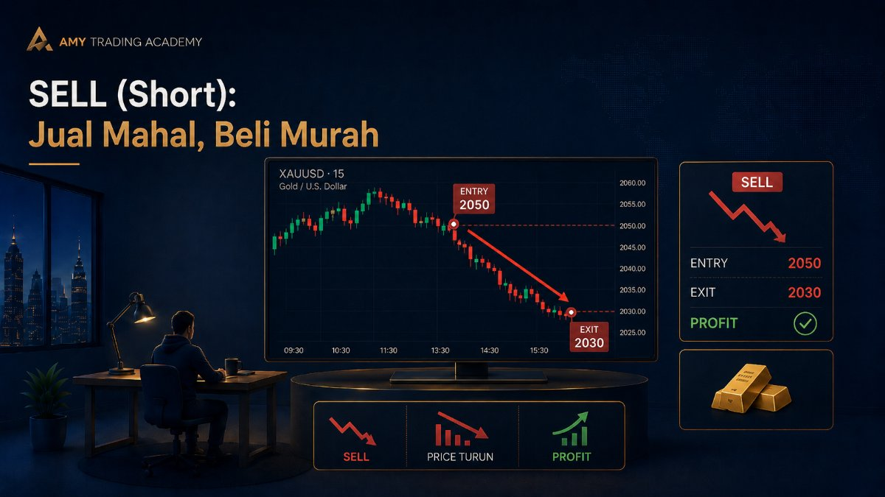
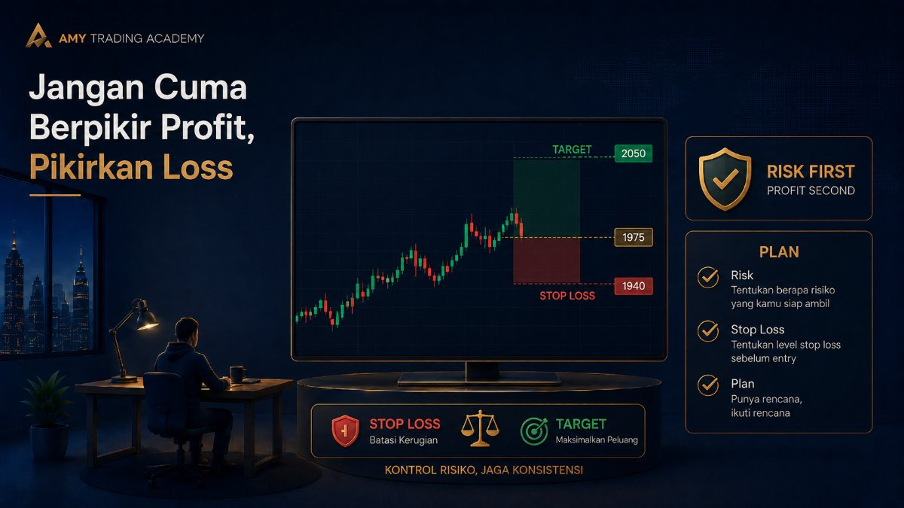
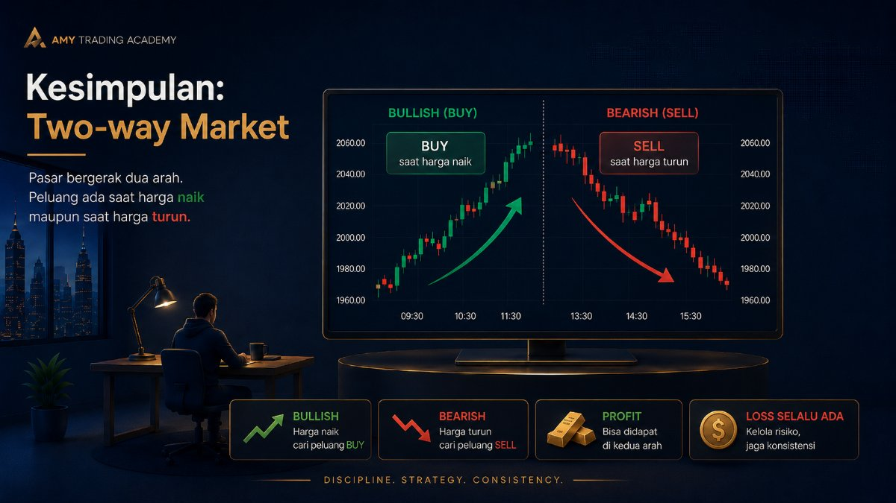

Buy, Sell, Profit, dan Loss

Di dunia nyata, cara pedagang mencari untung itu gampang dipahami: beli barang di harga murah, lalu jual di harga mahal. Pedagang baju beli grosir di Tanah Abang seharga Rp50.000, lalu dijual lagi di tokonya seharga Rp100.000. Selisih Rp50.000 itulah yang disebut keuntungan (Profit).
Di dalam trading, konsep dasarnya persis seperti itu. Tapi ada satu "keajaiban" di pasar finansial yang sering membuat pemula bingung: kamu tetap bisa mencari untung meskipun harga barang sedang turun anjlok. Bagaimana caranya? Mari kita bedah pelan-pelan konsep Buy (Long) dan Sell (Short).
BUY (Long): Beli Murah, Jual Mahal

Ini adalah logika yang paling masuk akal bagi semua orang. Dalam bahasa trading profesional, posisi Buy sering juga disebut dengan istilah Long. Kamu menekan tombol Buy ketika kamu menganalisa dan meyakini bahwa harga suatu aset akan NAIK di masa depan.
Contoh skenario di market Gold (XAUUSD):
- Harga Gold saat ini berada di level $2000 per troy ounce.
- Kamu menganalisa chart dan melihat ada pola yang mengindikasikan harga akan naik. Kamu pun menekan tombol Buy di harga $2000.
- Beberapa jam kemudian, analisamu benar. Harga Gold naik ke $2010.
- Kamu menutup posisimu (Close Order). Kamu mendapatkan keuntungan dari selisih naik sebesar $10. Inilah yang disebut Profit.
Lalu bagaimana kalau analisamu salah? Kalau kamu sudah terlanjur Buy di $2000, ternyata harga malah turun ke $1990. Karena harga bergerak berlawanan dengan analisamu, kamu mengalami kerugian selisih $10. Ini yang disebut Loss.
SELL (Short): Jual Mahal, Beli Murah

Nah, di sinilah banyak pemula merasa bingung. "Loh, aku kan belum punya barangnya, masa tiba-tiba aku klik Sell (jual)? Jual barang punya siapa?"
Di dunia trading instrumen derivatif (seperti CFD Forex, Gold, atau Futures), kamu bisa melakukan apa yang disebut Short Selling atau posisi Sell. Kamu menekan tombol Sell ketika kamu meyakini bahwa harga suatu aset akan TURUN di masa depan.
Anggap saja begini analoginya: Kamu meminjam 1 kg emas dari temanmu (broker) saat harga emas sedang mahal banget (misal Rp1 juta/gram). Kamu langsung jual emas pinjaman itu ke pasar, dan mengantongi uang Rp1 juta.
Besoknya, harga emas dunia tiba-tiba anjlok parah jadi Rp800 ribu/gram. Karena kamu masih punya hutang 1 kg emas ke temanmu, kamu pergi ke pasar dan membeli emas di harga yang lagi murah itu (Rp800 ribu). Kamu kembalikan emas itu ke temanmu. Sisa uang Rp200 ribu dari hasil penjualan kemarin? Itu jadi Profit masuk kantongmu!
Contoh skenario di chart Gold (XAUUSD):
- Harga Gold saat ini berada di $2050 (kamu anggap harga sudah terlalu mahal).
- Kamu menganalisa bahwa harga akan turun, jadi kamu menekan tombol Sell di harga $2050.
- Ternyata benar, harga longsor ke $2030.
- Kamu menutup posisimu (Close Order). Kamu mendapat untung dari selisih turun sebesar $20.
Sebaliknya, kalau kamu menekan tombol Sell di $2050, tapi harga malah terus meroket naik ke $2070, posisi Sell kamu akan mengalami kerugian (Loss) sebesar $20. Ingat: Posisi Sell hanya akan untung kalau harga bergerak TURUN.
- Kalau kamu yakin harga mau NAIK 👉 Tekan tombol BUY.
- Kalau kamu yakin harga mau TURUN 👉 Tekan tombol SELL.
Jangan Cuma Berpikir Profit, Pikirkan Loss

Banyak trader pemula (mungkin kamu juga) yang pikirannya cuma diisi dengan: "Wah, kalau harga naik ke sini, aku untung sekian juta nih!" Mereka berkhayal sebelum uangnya benar-benar ada di tangan.
Trader profesional berpikir terbalik. Sebelum klik Buy atau Sell, yang pertama kali mereka pikirkan adalah: "Kalau analisaku salah, di harga berapa aku harus menyerah dan menerima kerugian (Loss)? Apakah uang yang hilang nanti masih masuk akal untuk modalku?"
Profit itu gampang diurus kalau sudah terjadi. Market yang akan memberikan hadiah itu padamu. Tapi Loss? Itu adalah tanggung jawabmu penuh. Kalau kamu tidak punya batasan rugi (yang nanti akan kita pelajari di bab Stop Loss), satu posisi salah saja bisa menghapus seluruh modal di akunmu tanpa sisa.
Kesimpulan

Trading itu adalah permainan dua arah (Two-way market). Kamu bisa mencari peluang di tengah market yang sedang kuat naik (Bullish) dengan melakukan Buy, dan kamu juga bisa memanen keuntungan di tengah market yang sedang panik anjlok (Bearish) dengan melakukan Sell.
Yang paling penting untuk diingat: Tidak peduli apakah kamu sedang menekan tombol Buy atau Sell, selalu sadari bahwa probabilitas kerugian (Loss) akan selalu ada. Tugasmu bukan menghindari kerugian secara mutlak, karena itu mustahil. Tugasmu adalah memastikan kerugianmu selalu lebih kecil dibandingkan keuntunganmu.